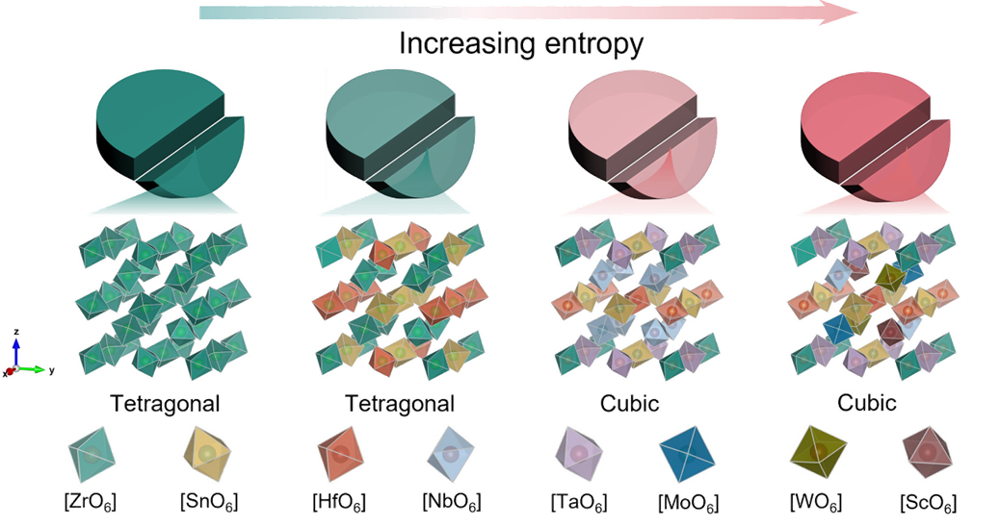
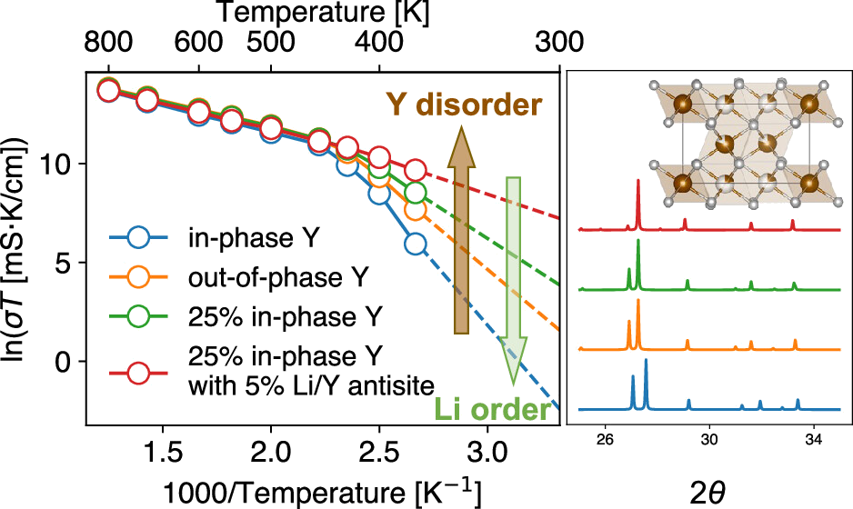

Research Areas
Research Interest
Our group develops advanced materials, interfaces, and electrolyte chemistries for sustainable energy storage and beyond, with an emphasis on bridging fundamental mechanistic understanding with application-driven materials design and engineering.
Aqueous Zinc Batteries
Electrolyte engineering, separator design, Zn-metal interfaces, and practical cell configurations.
Redox Flow Batteries
Solvation regulation, coordination chemistry, redox speciation, and application-driven electrolyte design.
Lithium-Ion Battery Materials
Materials design, prelithiation chemistry, diagnostic strategies, degradation, and failure analysis.
Sustainability & AI
Atmospheric water harvesting, waste upcycling, and AI-guided materials discovery and electrochemical research.
Aqueous Zinc Batteries
We develop key materials and chemistries for high-performance aqueous zinc batteries, with particular interests in electrolyte engineering, separator design, Zn-metal interfaces, and practical cell configurations.
- Regulating Zn deposition and parasitic reactions
- Understanding interfacial evolution and ion transport
- Translating materials chemistry into safer, longer-lasting, higher-energy cells
Our research aims to connect mechanistic understanding with practical cell design for safer, longer-lasting, and higher-energy aqueous batteries.


Redox Flow Batteries
We explore electrolyte chemistry and solvation regulation for next-generation redox flow batteries, from molecular-level structure to long-term device performance.
- Solvation structures, coordination chemistry, and redox speciation
- Ion transport and reaction selectivity
- Electrolyte design for calendar life, temperature window, and energy efficiency
Beyond molecular-level understanding, we emphasize application-driven electrolyte design and long-term cycling stability.
Application-Oriented Lithium-Ion Battery Materials
We develop functional materials and diagnostic strategies for practical lithium-ion batteries, spanning materials design, lithium-compensation/prelithiation chemistry, reaction mechanisms, degradation analysis, and failure mechanisms.
- Materials and cell-level strategies for lithium compensation
- Operando and in situ diagnostics for reaction and degradation mechanisms
- Failure analysis linked to lifetime, energy density, and safety
Our goal is to connect materials-level understanding with cell-level performance and provide practical solutions for battery lifetime, energy density, and safety.


Sustainability-Driven Interdisciplinary Research
We are interested in emerging research at the intersection of materials science, sustainability, and artificial intelligence.
- Atmospheric water harvesting
- Upcycling waste materials into functional materials
- AI-guided materials discovery and electrochemical research
These interdisciplinary directions help us develop sustainable technologies while opening new opportunities for data-driven electrochemical research.